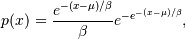
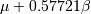
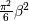
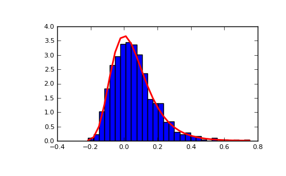
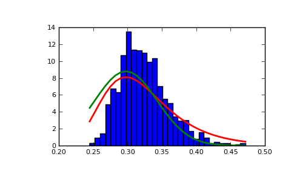

numpy.random.RandomState.gumbel¶
- RandomState.gumbel(loc=0.0, scale=1.0, size=None)¶
Gumbel distribution.
Draw samples from a Gumbel distribution with specified location and scale. For more information on the Gumbel distribution, see Notes and References below.
Parameters : loc : float
The location of the mode of the distribution.
scale : float
The scale parameter of the distribution.
size : tuple of ints
Output shape. If the given shape is, e.g., (m, n, k), then m * n * k samples are drawn.
Returns : out : ndarray
The samples
See also
scipy.stats.gumbel_l, scipy.stats.gumbel_r
- scipy.stats.genextreme
- probability density function, distribution, or cumulative density function, etc. for each of the above
Notes
The Gumbel (or Smallest Extreme Value (SEV) or the Smallest Extreme Value Type I) distribution is one of a class of Generalized Extreme Value (GEV) distributions used in modeling extreme value problems. The Gumbel is a special case of the Extreme Value Type I distribution for maximums from distributions with “exponential-like” tails.
The probability density for the Gumbel distribution is

where
 is the mode, a location parameter, and
is the mode, a location parameter, and  is
the scale parameter.
is
the scale parameter.The Gumbel (named for German mathematician Emil Julius Gumbel) was used very early in the hydrology literature, for modeling the occurrence of flood events. It is also used for modeling maximum wind speed and rainfall rates. It is a “fat-tailed” distribution - the probability of an event in the tail of the distribution is larger than if one used a Gaussian, hence the surprisingly frequent occurrence of 100-year floods. Floods were initially modeled as a Gaussian process, which underestimated the frequency of extreme events.
It is one of a class of extreme value distributions, the Generalized Extreme Value (GEV) distributions, which also includes the Weibull and Frechet.
The function has a mean of  and a variance of .
References
Gumbel, E. J., Statistics of Extremes, New York: Columbia University Press, 1958.
Reiss, R.-D. and Thomas, M., Statistical Analysis of Extreme Values from Insurance, Finance, Hydrology and Other Fields, Basel: Birkhauser Verlag, 2001.
Examples
Draw samples from the distribution:
>>> mu, beta = 0, 0.1 # location and scale >>> s = np.random.gumbel(mu, beta, 1000)
Display the histogram of the samples, along with the probability density function:
>>> import matplotlib.pyplot as plt >>> count, bins, ignored = plt.hist(s, 30, normed=True) >>> plt.plot(bins, (1/beta)*np.exp(-(bins - mu)/beta) ... * np.exp( -np.exp( -(bins - mu) /beta) ), ... linewidth=2, color='r') >>> plt.show()
(Source code, png, pdf)
Show how an extreme value distribution can arise from a Gaussian process and compare to a Gaussian:
>>> means = [] >>> maxima = [] >>> for i in range(0,1000) : ... a = np.random.normal(mu, beta, 1000) ... means.append(a.mean()) ... maxima.append(a.max()) >>> count, bins, ignored = plt.hist(maxima, 30, normed=True) >>> beta = np.std(maxima)*np.pi/np.sqrt(6) >>> mu = np.mean(maxima) - 0.57721*beta >>> plt.plot(bins, (1/beta)*np.exp(-(bins - mu)/beta) ... * np.exp(-np.exp(-(bins - mu)/beta)), ... linewidth=2, color='r') >>> plt.plot(bins, 1/(beta * np.sqrt(2 * np.pi)) ... * np.exp(-(bins - mu)**2 / (2 * beta**2)), ... linewidth=2, color='g') >>> plt.show()

{kind=link}
{kind=link}